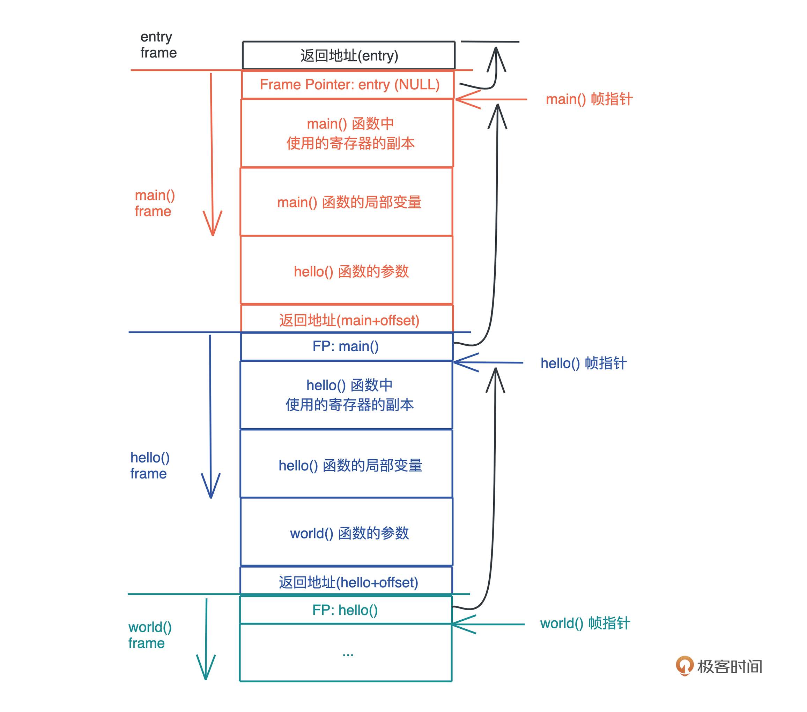
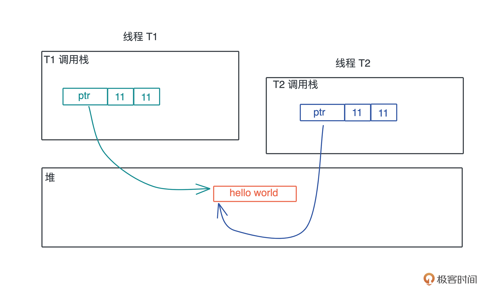
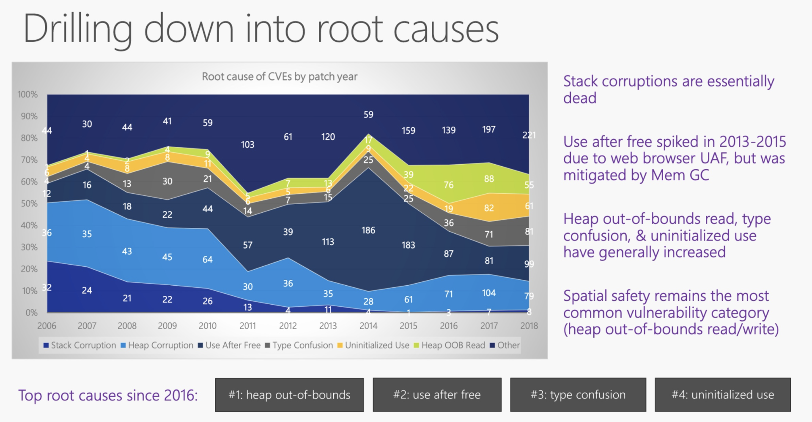

- 00 开篇词 让Rust成为你的下一门主力语言.md
- 01 内存：值放堆上还是放栈上，这是一个问题.md
- 02 串讲：编程开发中，那些你需要掌握的基本概念.md
- 03 初窥门径：从你的第一个Rust程序开始！.md
- 04 get hands dirty：来写个实用的CLI小工具.md
- 05 get hands dirty：做一个图片服务器有多难？.md
- 06 get hands dirty：SQL查询工具怎么一鱼多吃？.md
- 07 所有权：值的生杀大权到底在谁手上？.md
- 08 所有权：值的借用是如何工作的？.md
- 09 所有权：一个值可以有多个所有者么？.md
- 10 生命周期：你创建的值究竟能活多久？.md
- 11 内存管理：从创建到消亡，值都经历了什么？.md
- 12 类型系统：Rust的类型系统有什么特点？.md
- 13 类型系统：如何使用trait来定义接口？.md
- 14 类型系统：有哪些必须掌握的trait？.md
- 15 数据结构：这些浓眉大眼的结构竟然都是智能指针？.md
- 16 数据结构：Vec_T_、&[T]、Box_[T]_ ，你真的了解集合容器么？.md
- 17 数据结构：软件系统核心部件哈希表，内存如何布局？.md
- 18 错误处理：为什么Rust的错误处理与众不同？.md
- 19 闭包：FnOnce、FnMut和Fn，为什么有这么多类型？.md
- 20 4 Steps ：如何更好地阅读Rust源码？.md
- 21 阶段实操（1）：构建一个简单的KV server-基本流程.md
- 22 阶段实操（2）：构建一个简单的KV server-基本流程.md
- 23 类型系统：如何在实战中使用泛型编程？.md
- 24 类型系统：如何在实战中使用trait object？.md
- 25 类型系统：如何围绕trait来设计和架构系统？.md
- 26 阶段实操（3）：构建一个简单的KV server-高级trait技巧.md
- 27 生态系统：有哪些常有的Rust库可以为我所用？.md
- 28 网络开发（上）：如何使用Rust处理网络请求？.md
- 29 网络开发（下）：如何使用Rust处理网络请求？.md
- 30 Unsafe Rust：如何用C++的方式打开Rust？.md
- 31 FFI：Rust如何和你的语言架起沟通桥梁？.md
- 32 实操项目：使用PyO3开发Python3模块.md
- 33 并发处理（上）：从atomics到Channel，Rust都提供了什么工具？.md
- 34 并发处理（下）：从atomics到Channel，Rust都提供了什么工具？.md
- 35 实操项目：如何实现一个基本的MPSC channel？.md
- 36 阶段实操（4）：构建一个简单的KV server-网络处理.md
- 37 阶段实操（5）：构建一个简单的KV server-网络安全.md
- 38 异步处理：Future是什么？它和async_await是什么关系？.md
- 39 异步处理：async_await内部是怎么实现的？.md
- 40 异步处理：如何处理异步IO？.md
- 41 阶段实操（6）：构建一个简单的KV server-异步处理.md
- 42 阶段实操（7）：构建一个简单的KV server-如何做大的重构？.md
- 43 生产环境：真实世界下的一个Rust项目包含哪些要素？.md
- 44 数据处理：应用程序和数据如何打交道？.md
- 45 阶段实操（8）：构建一个简单的KV server-配置_测试_监控_CI_CD.md
- 46 软件架构：如何用Rust架构复杂系统？.md
- 加餐 Rust2021版次问世了！.md
- 加餐 代码即数据：为什么我们需要宏编程能力？.md
- 加餐 宏编程（上）：用最“笨”的方式撰写宏.md
- 加餐 宏编程（下）：用 syn_quote 优雅地构建宏.md
- 加餐 愚昧之巅：你的Rust学习常见问题汇总.md
- 加餐 期中测试：参考实现讲解.md
- 加餐 期中测试：来写一个简单的grep命令行.md
- 加餐 这个专栏你可以怎么学，以及Rust是否值得学？.md
- 大咖助场 开悟之坡（上）：Rust的现状、机遇与挑战.md
- 大咖助场 开悟之坡（下）：Rust的现状、机遇与挑战.md
- 特别策划 学习锦囊（一）：听听课代表们怎么说.md
- 特别策划 学习锦囊（三）：听听课代表们怎么说.md
- 特别策划 学习锦囊（二）：听听课代表们怎么说.md
- 用户故事 绝望之谷：改变从学习开始.md
- 用户故事 语言不仅是工具，还是思维方式.md
- 结束语 永续之原：Rust学习，如何持续精进？.md
01 内存：值放堆上还是放栈上，这是一个问题
你好，我是陈天。今天我们打卡Rust学习的第一讲。
你是不是已经迫不及待想要了解Rust了，但是别着急，我们不会按常规直接开始介绍语法，而会先来回顾那些你平时认为非常基础的知识，比如说内存、函数。
提到基础知识，你是不是已经有点提不起兴趣了，这些东西我都知道，何必浪费时间再学一次呢？其实不然，这些年我接触过的资深工程师里，基础知识没学透，工作多年了，还得回来补课的大有人在。
以最基础的内存为例，很多人其实并没有搞懂什么时候数据应该放在栈上，什么时候应该在堆上，直到工作中实际出现问题了，才意识到数据的存放方式居然会严重影响并发安全，无奈回头重新补基础，时间精力的耗费都很大。
其实作为开发者，我们一辈子会经历很多工具、框架和语言，但是这些东西无论怎么变，底层逻辑都是不变的。
所以今天我们得回头重新思考，编程中那些耳熟能详却又似懂非懂的基础概念，搞清楚底层逻辑。而且这些概念，对我们后面学习和理解 Rust 中的知识点非常重要，之后，我们也会根据需要再穿插深入讲解。
代码中最基本的概念是变量和值，而存放它们的地方是内存，所以我们就从内存开始。
内存
我们的程序无时无刻不在跟内存打交道。在下面这个把 “hello world!” 赋值给 s 的简单语句中，就跟只读数据段（RODATA）、堆、栈分别有深度交互：
let s = "hello world".to_string();
你可以使用 Rust playground 里这个代码片段 感受一下字符串的内存使用情况。
首先，“hello world” 作为一个字符串常量（string literal），在编译时被存入可执行文件的 .RODATA 段（GCC）或者 .RDATA 段（VC++），然后在程序加载时，获得一个固定的内存地址。
当执行 “hello world”.to_string() 时，在堆上，一块新的内存被分配出来，并把 “hello world” 逐个字节拷贝过去。
当我们把堆上的数据赋值给 s 时，s 作为分配在栈上的一个变量，它需要知道堆上内存的地址，另外由于堆上的数据大小不确定且可以增长，我们还需要知道它的长度以及它现在有多大。
最终，为了表述这个字符串，我们使用了三个 word：第一个表示指针、第二个表示字符串的当前长度（11）、第三个表示这片内存的总容量（11）。在 64 位系统下，三个 word 是 24 个字节。
你也可以看下图，更直观一些：
刚才提到字符串的内容在堆上，而指向字符串的指针等信息在栈上，现在就是检验你内存基础知识是否扎实的时候了：数据什么时候可以放在栈上，什么时候需要放在堆上呢？
这个问题，很多使用自动内存管理语言比如 Java/Python 的开发者，可能有一些模糊的印象或者规则：
- 基本类型（primitive type）存储在栈上，对象存储在堆上；
- 少量数据存储在栈上，大量的数据存储在堆上。
这些虽然对，但并没有抓到实质。如果你在工作中只背规则套公式，一遇到特殊情况就容易懵，但是如果明白公式背后的推导逻辑，即使忘了，也很快能通过简单思考找到答案，所以接下来我们深挖堆和栈的设计原理，看看它们到底是如何工作的。
栈
栈是程序运行的基础。每当一个函数被调用时，一块连续的内存就会在栈顶被分配出来，这块内存被称为帧（frame）。
我们知道，栈是自顶向下增长的，一个程序的调用栈最底部，除去入口帧（entry frame），就是 main() 函数对应的帧，而随着 main() 函数一层层调用，栈会一层层扩展；调用结束，栈又会一层层回溯，把内存释放回去。
在调用的过程中，一个新的帧会分配足够的空间存储寄存器的上下文。在函数里使用到的通用寄存器会在栈保存一个副本，当这个函数调用结束，通过副本，可以恢复出原本的寄存器的上下文，就像什么都没有经历一样。此外，函数所需要使用到的局部变量，也都会在帧分配的时候被预留出来。
整个过程你可以再看看这张图辅助理解：- 
那一个函数运行时，怎么确定究竟需要多大的帧呢？
这要归功于编译器。在编译并优化代码的时候，一个函数就是一个最小的编译单元。
在这个函数里，编译器得知道要用到哪些寄存器、栈上要放哪些局部变量，而这些都要在编译时确定。所以编译器就需要明确每个局部变量的大小，以便于预留空间。
这下我们就明白了：在编译时，一切无法确定大小或者大小可以改变的数据，都无法安全地放在栈上，最好放在堆上。比如一个函数，参数是字符串：
fn say_name(name: String) {}
// 调用
say_name("Lindsey".to_string());
say_name("Rosie".to_string());
字符串的数据结构，在编译时大小不确定，运行时执行到具体的代码才知道大小。比如上面的代码，“Lindsey” 和 “Rosie” 的长度不一样，say_name() 函数只有在运行的时候，才知道参数的具体的长度。
所以，我们无法把字符串本身放在栈上，只能先将其放在堆上，然后在栈上分配对应的指针，引用堆上的内存。
放栈上的问题
从刚才的图中你也可以直观看到，栈上的内存分配是非常高效的。只需要改动栈指针（stack pointer），就可以预留相应的空间；把栈指针改动回来，预留的空间又会被释放掉。预留和释放只是动动寄存器，不涉及额外计算、不涉及系统调用，因而效率很高。
所以理论上说，只要可能，我们应该把变量分配到栈上，这样可以达到更好的运行速度。
那为什么在实际工作中，我们又要避免把大量的数据分配在栈上呢？
这主要是考虑到调用栈的大小，避免栈溢出（stack overflow）。一旦当前程序的调用栈超出了系统允许的最大栈空间，无法创建新的帧，来运行下一个要执行的函数，就会发生栈溢出，这时程序会被系统终止，产生崩溃信息。
过大的栈内存分配是导致栈溢出的原因之一，更广为人知的原因是递归函数没有妥善终止。一个递归函数会不断调用自己，每次调用都会形成一个新的帧，如果递归函数无法终止，最终就会导致栈溢出。
堆
栈虽然使用起来很高效，但它的局限也显而易见。当我们需要动态大小的内存时，只能使用堆，比如可变长度的数组、列表、哈希表、字典，它们都分配在堆上。
堆上分配内存时，一般都会预留一些空间，这是最佳实践。
比如你创建一个列表，并往里添加两个值：
let mut arr = Vec::new();
arr.push(1);
arr.push(2);
这个列表实际预留的大小是 4，并不等于其长度 2。这是因为堆上内存分配会使用 libc 提供的 malloc() 函数，其内部会请求操作系统的系统调用，来分配内存。系统调用的代价是昂贵的，所以我们要避免频繁地 malloc()。
对上面的代码来说，如果我们需要多少就分配多少，那列表每次新增值，都要新分配一大块的内存，先拷贝已有数据，再把新的值添加进去，最后释放旧的内存，这样效率很低。所以在堆内存分配时，预留的空间大小 4 会大于需要的实际大小 2 。
除了动态大小的内存需要被分配到堆上外，动态生命周期的内存也需要分配到堆上。
上文中我们讲到，栈上的内存在函数调用结束之后，所使用的帧被回收，相关变量对应的内存也都被回收待用。所以栈上内存的生命周期是不受开发者控制的，并且局限在当前调用栈。
而堆上分配出来的每一块内存需要显式地释放，这就使堆上内存有更加灵活的生命周期，可以在不同的调用栈之间共享数据。
如下图所示：- 
放堆上的问题
然而，堆内存的这种灵活性也给内存管理带来很多挑战。
如果手工管理堆内存的话，堆上内存分配后忘记释放，就会造成内存泄漏。一旦有内存泄漏，程序运行得越久，就越吃内存，最终会因为占满内存而被操作系统终止运行。
如果堆上内存被多个线程的调用栈引用，该内存的改动要特别小心，需要加锁以独占访问，来避免潜在的问题。比如说，一个线程在遍历列表，而另一个线程在释放列表中的某一项，就可能访问野指针，导致堆越界（heap out of bounds）。而堆越界是第一大内存安全问题。
如果堆上内存被释放，但栈上指向堆上内存的相应指针没有被清空，就有可能发生使用已释放内存（use after free）的情况，程序轻则崩溃，重则隐含安全隐患。根据微软安全反应中心（MSRC）的研究，这是第二大内存安全问题。

GC、ARC如何解决
为了避免堆内存手动管理造成的这些问题，以 Java 为首的一系列编程语言，采用了追踪式垃圾回收（Tracing GC）的方法，来自动管理堆内存。这种方式通过定期标记（mark）找出不再被引用的对象，然后将其清理（sweep）掉，来自动管理内存，减轻开发者的负担。
而 ObjC 和 Swift 则走了另一条路：自动引用计数（Automatic Reference Counting）。在编译时，它为每个函数插入 retain/release 语句来自动维护堆上对象的引用计数，当引用计数为零的时候，release 语句就释放对象。
我们来对比一下这两个方案。
从效率上来说，GC 在内存分配和释放上无需额外操作，而 ARC 添加了大量的额外代码处理引用计数，所以 GC 效率更高，吞吐量（throughput）更大。
但是，GC 释放内存的时机是不确定的，释放时引发的 STW（Stop The World），也会导致代码执行的延迟（latency）不确定。所以一般携带 GC 的编程语言，不适于做嵌入式系统或者实时系统。当然，Erlang VM是个例外， 它把 GC 的粒度下放到每个 process，最大程度解决了 STW 的问题。
我们使用 Android 手机偶尔感觉卡顿，而 iOS 手机却运行丝滑，大多是这个原因。而且做后端服务时，API 或者服务响应时间的 p99（99th percentile）也会受到 GC STW 的影响而表现不佳。
说句题外话，上面说的GC性能和我们常说的性能，涵义不太一样。常说的性能是吞吐量和延迟的总体感知，和实际性能是有差异的，GC 和 ARC 就是典型例子。GC 分配和释放内存的效率和吞吐量要比 ARC 高，但因为偶尔的高延迟，导致被感知的性能比较差，所以会给人一种 GC 不如 ARC 性能好的感觉。
小结
今天我们重新回顾基础概念，分析了栈和堆的特点。
对于存入栈上的值，它的大小在编译期就需要确定。栈上存储的变量生命周期在当前调用栈的作用域内，无法跨调用栈引用。
堆可以存入大小未知或者动态伸缩的数据类型。堆上存储的变量，其生命周期从分配后开始，一直到释放时才结束，因此堆上的变量允许在多个调用栈之间引用。但也导致堆变量的管理非常复杂，手工管理会引发很多内存安全性问题，而自动管理，无论是 GC 还是 ARC，都有性能损耗和其它问题。
一句话对比总结就是：栈上存放的数据是静态的，固定大小，固定生命周期；堆上存放的数据是动态的，不固定大小，不固定生命周期。
下一讲我们会讨论基础概念，比如值和类型、指针和引用、函数、方法和闭包、接口和虚表、并发与并行、同步和异步，以及 Promise/async/await ，这些我们学习 Rust 或者任何语言都会接触到。
思考题
最后，是课后练习题环节，欢迎在留言区分享你的思考。
- 如果有一个数据结构需要在多个线程中访问，可以把它放在栈上吗？为什么？-
- 可以使用指针引用栈上的某个变量吗？如果可以，在什么情况下可以这么做？
另外，文中出现的所有参考资料链接，我都会再统一整理到文末的“拓展阅读”板块，所以非常推荐你先跟着文章的思路走，学完之后如果有兴趣，可以看看我分享给你的其他资料。
如果你觉得有收获，也欢迎你分享给身边的朋友，邀TA一起讨论。我们下一讲见!
拓展阅读
- 微软安全反应中心（MSRC）的研究-
- 追踪式垃圾回收Tracing GC-
- 自动引用计数Automatic Reference Counting-
- Erlang VM 把 GC 的粒度下放到每个 process，最大程度解决了 STW 的问题-
- 课程的GitHub仓库，内含后续思考题参考思路及项目的完整代码
© 2019 - 2023 Liangliang Lee. Powered by Vert.x and hexo-theme-book.